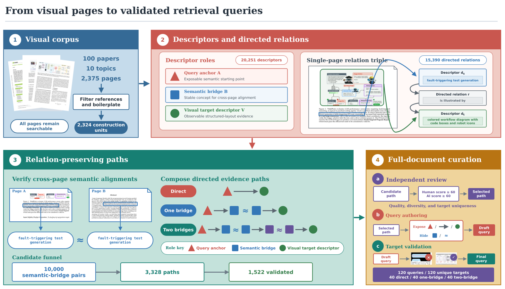

Shared retrieval contract
Every system receives the same query and corpus and returns a ranked top-10 page list, making static and interactive retrieval directly comparable.
Benchmarking Agents for Visually Rich Document Retrieval
1State Key Lab of General AI, School of Intelligence Science and Technology, Peking University
Visually rich documents encode relevance through language, layout, structured visual elements, and corpus context, yet retrieval is typically evaluated by one-shot query–page matching. Agentic-search benchmarks usually score downstream question answering or report generation, leaving document ranking under iterative evidence acquisition underexplored. We introduce VisDocAgentBench, a closed-corpus benchmark comparing static and agentic retrieval under a shared ranked-output contract. It contains 2,375 pages from 100 documents and 120 unique-target queries balanced across direct, one-bridge, and two-bridge evidence structures. Relation-preserving construction yields semantic, relational, and visual queries, followed by full-document review and hard-negative validation. A strong late-interaction visual retriever reaches 97.50% Recall@1 on direct items but 2.50% on two-bridge items, exposing the limits of query–target matching when relevance depends on corpus context. Agents recover much of this loss, but planner choice and retrieval representation remain decisive. Every planner performs better with visual retrieval, whose best R@1 reaches 67.50% versus 37.50% for OCR-text. Ablations identify iterative search and page inspection as consequential capabilities, and providing the complete support context improves ranking on both routes. Trace analysis localizes the remaining losses to target discovery, candidate examination, and evidence-role integration. These findings motivate retrieval agents that combine modality-preserving discovery with evidence-directed verification.
01
Relevance in visually rich documents can depend on language, layout, structured visual elements, and evidence elsewhere in the corpus.
Every system receives the same query and corpus and returns a ranked top-10 page list, making static and interactive retrieval directly comparable.
One- and two-bridge queries require corpus evidence to interpret which visual endpoint satisfies the request.
Opaque handles, declared tools, and a fixed action budget expose how an agent searches, inspects, verifies, and ranks pages.
02
Candidate evidence relations are aligned across pages, composed into paths, independently reviewed, and validated against hard negatives.

03
Static retrievers and tool-using agents are compared under Visual and OCR-Text retrieval.
| Retriever / Planner | Visual | OCR-Text | ||||||||
|---|---|---|---|---|---|---|---|---|---|---|
| R@1 | R@3 | R@5 | R@10 | MRR@10 | R@1 | R@3 | R@5 | R@10 | MRR@10 | |
| Static Retrievers | ||||||||||
| Qwen3 Embedding | 20.83 | 30.00 | 34.17 | 45.00 | 27.34 | 1.67 | 5.83 | 13.33 | 19.17 | 6.01 |
| BM25 | — | — | — | — | — | 6.67 | 15.00 | 19.17 | 30.00 | 12.46 |
| BM25 + dense RRF | — | — | — | — | — | 5.00 | 14.17 | 19.17 | 26.67 | 11.41 |
| Nemotron ColEmbed | 40.00 | 52.50 | 65.00 | 70.00 | 48.86 | — | — | — | — | — |
| Tool-Using Agents: Closed-Source Planners | ||||||||||
| GPT-5.5 | 60.00 | 61.67 | 64.17 | 69.17 | 61.87 | 26.67 | 27.50 | 27.50 | 28.33 | 27.19 |
| GPT-5.6-luna | 43.33 | 47.50 | 50.83 | 57.50 | 46.75 | 12.50 | 14.17 | 18.33 | 21.67 | 14.77 |
| GPT-5.6-terra | 54.17 | 57.50 | 58.33 | 64.17 | 56.65 | 26.67 | 28.33 | 28.33 | 33.33 | 27.92 |
| GPT-5.6-sol | 61.67 | 65.00 | 65.83 | 68.33 | 63.58 | 36.67 | 38.33 | 40.83 | 44.17 | 38.40 |
| Claude Opus 4.8 | 47.50 | 54.17 | 59.17 | 68.33 | 52.39 | 24.17 | 27.50 | 30.00 | 40.83 | 27.38 |
| Claude Fable 5 | 62.50 | 67.50 | 71.67 | 80.00 | 66.69 | 35.00 | 41.67 | 43.33 | 52.50 | 39.34 |
| Claude Sonnet 5 | 30.00 | 40.83 | 46.67 | 55.83 | 37.33 | 17.50 | 20.00 | 22.50 | 23.33 | 19.12 |
| Claude Opus 5 | 67.50 | 70.83 | 71.67 | 75.00 | 69.43 | 37.50 | 41.67 | 45.00 | 49.17 | 40.57 |
| Tool-Using Agents: Open-Weight Planner | ||||||||||
| Qwen3.5 (thinking) | 27.50 | 33.33 | 35.00 | 40.00 | 31.20 | 8.33 | 9.17 | 10.00 | 15.83 | 9.70 |
| Qwen3.5 (no thinking) | 19.17 | 23.33 | 30.00 | 38.33 | 23.55 | 1.67 | 4.17 | 7.50 | 10.00 | 3.83 |
@article{hu2026visdocagentbench,
title={VisDocAgentBench: Benchmarking Agents for Visually Rich Document Retrieval},
author={Hu, Lexiang and Zhang, Yanzhao and Li, Mingxin and Long, Dingkun and Li, Yikang and Zhang, Fuwei and Wang, Yisen and Lin, Zhouchen},
journal={arXiv preprint arXiv:2608.17889},
year={2026}
}